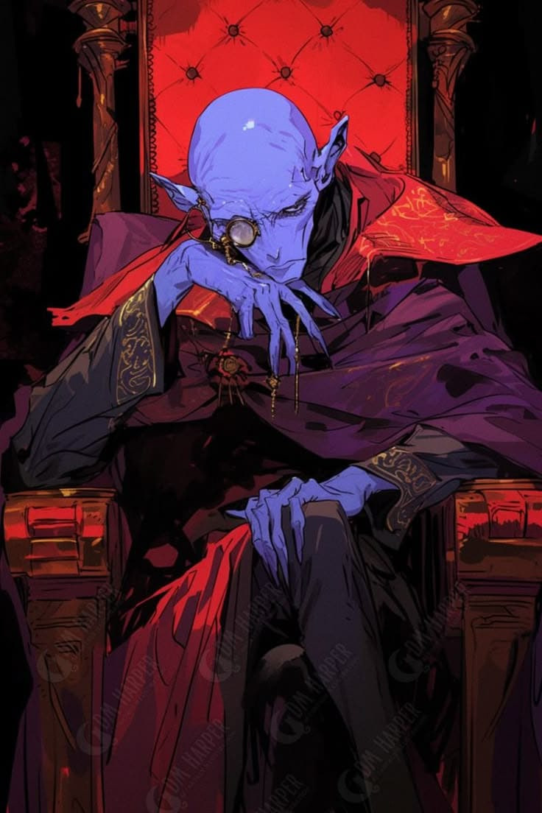

🧙♂️ Aliança Arcana
Aqui a magia é o centro de tudo.

📜 Sobre a Aliança
Governada por um conselho de grandes magos, a Aliança Arcana valoriza conhecimento, estudo e domínio das forças arcanas acima de qualquer tradição. Uma união de cidades onde a magia é o centro de tudo. Cada região segue suas próprias práticas, mas todas compartilham a mesma crença: a magia é a chave para compreender — e moldar — o mundo. Entre academias grandiosas, florestas encantadas e experimentos perigosos, a Aliança é um lugar de descobertas… e de riscos que nem sempre podem ser controlados.
🏛️ Política
A Aliança Arcana é governada por um conselho de magos, onde poder e influência são definidos pelo conhecimento e domínio da magia. Não existe um governante permanente — a liderança pode mudar com o tempo, conforme novos membros se destacam ou antigas figuras perdem sua posição. Cada cidade mantém certa autonomia, adotando seus próprios métodos e tradições, o que cria um equilíbrio instável entre cooperação e rivalidade. Nos bastidores, disputas por conhecimento, poder e reconhecimento são constantes — nem sempre de forma aberta.
📍 Locais Importantes
- • Abracadabra — A capital da Aliança Arcana. Uma cidade onde a magia está presente em todos os aspectos da vida, servindo como centro político e arcano do continente..
- • Arcanix — O maior centro de estudo mágico do mundo. Lar da principal academia e de uma vasta biblioteca, atrai estudiosos e aprendizes de todas as regiões.
- • Floresta das Fadas — Uma região viva e imprevisível, habitada por criaturas mágicas. Um lugar de beleza única… e perigos que nem todos compreendem.
👥 Personagens Importantes
.jpg)
🧙♀️ Lyraeth Sylvaris
Diretora de Arcanix • Líder do Conselho Arcano
Diretora de Arcanix e líder do Conselho Arcano, Lyraeth é uma das figuras mais influentes da Aliança. Com mais de 130 anos, mantém aparência jovem — mas sua mente é extremamente experiente e calculista.
Defensora do controle e responsabilidade no uso da magia, governa há décadas com firmeza, evitando que o poder arcano se torne caos.
Alguns dizem que seu controle é necessário… outros que já dura tempo demais.

🧙 Eldric Vaelor
Mago Errante
Um dos magos mais poderosos do continente, Eldric recusou repetidamente entrar no Conselho Arcano. Para ele, liberdade vale mais que poder.
Andarilho imprevisível, aparece quando necessário — ajudando, observando… ou simplesmente desaparecendo.
Ele já salvou o mundo uma vez… e pode decidir não fazê-lo de novo.

🕯️ Azaroth
Mago Foragido • Traidor do Conselho
Antigo membro respeitado da Aliança Arcana, Azaroth passou séculos acumulando conhecimento e poder, sempre buscando alcançar a liderança do Conselho — algo que nunca conseguiu.
Após roubar feitiços proibidos e desaparecer, tornou-se uma das maiores ameaças do mundo, reunindo seguidores e estudando magias que jamais deveriam ser usadas.
Quais são suas intenções?